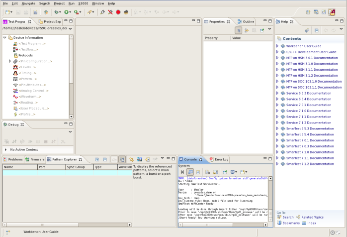

SmarTest introduction
SmarTest uses the Eclipse Work Center as the integrated development environment containing all the independent graphical user interfaces of SmarTest. The SmarTest Work Center is the main window which appears when SmarTest is started. All SmarTest tools are controlled from the work center.
Only the basic operations of the SmarTest Work Center are introduced here. For more information on how to use SmarTest, see SmarTest Work Center, Using SmarTest, and Key Setup and Debug Workflows.

For general information on the SmarTest Work Center , on the main menu see .
- Workspace
A workspace can be seen as a virtual container for your projects (device projects, test method projects, ...) and storage for the preferences and customization of your working environment.
It is like your desktop: personal and individual. Usually, you do not share your workspace.
The workspace contains references to your projects, like device projects or universal test method projects. The workspace itself is also a directory on the file system.
For compatibility reasons and data safety reasons when workspaces are removed, device projects and other projects should not be physically located in the workspace directory on the file system.
For more information, see SmarTest workspaces, Starting SmarTest, and About projects, file system, and references.
- Perspective
A perspective in Eclipse is a specific configuration of views, editors, and the toolbar. It is typically set up in a way which best supports the current workflow. There are several predefined perspectives: 93000 Setup, 93000 Hardware, 93000 RF Setup, 93000 High Speed Extension, C/C++ and Debug. You can customize existing perspectives,and you can create your own perspectives according to your needs. Perspectives belong to the workspace.
It is like the way you order your papers and tools on your desk.
For more information, see Working with a perspective and Perspectives.
- Editor
- An editor is typically used to edit or browse a document or input object. Modifications made in an editor follow an open-save-close life cycle model. For more information, see Editors.
- View
A view is typically used to navigate a hierarchy of information, open an editor, or display properties of selected elements within an editor or another view. The layout of editors and views within a page is controlled by the active perspective. For more information, see Views.
- Preference
- A preference is the data that is persistent between SmarTest Work Center sessions to allow you to keep the specific state and settings of views and editors. Preferences are stored within the user's workspace. For more information, see Changing Preferences and Preferences window.
- Plug-in
- Eclipse is completely built on Java and uses a component based architecture. Components in Eclipse are named plug-ins. Everything in Eclipse is a plug-in, starting with very basic core components and ending with highly specialized tools. Views and editors are deployed as parts of plug-ins.
- Project
A project in Eclipse matches a directory structure on the file system where your code is stored (including some meta-data). The project properties contain this file system path as a reference for you.To find out the path, in the Project Explorer view select the project and look up the path in the Properties view. The Project Explorer view shows all projects known in the current workspace.
There are different types of projects in Eclipse, including built-in types such as C++ and Java projects, and custom types such as SmarTest device projects. Each of these has certain characteristics, but they all adhere to the basic Eclipse project concepts.
The customized project types, device project and universal test method project, are introduced in the SmarTest Work Center.
A device project contains all the device setup information. A SmarTest device directory becomes a device project in Eclipse as soon as the device is activated (for example, on SmarTest startup or on change device operation). This does not change the file system location of the device. However, it does add some additional Eclipse specific dot-files (like .project) to the device directory. For details, see Creating a new device.
A universal test method project is a standard C++ project. It is independent of all device projects. You can use it in multiple devices by referencing to it. A universal test method project directory must be outside of any device directory and any Eclipse project directory. For details, see Universal Test Method.
Functional changes
- Introduced before SmarTest 6.3.2
- SmarTest 7.0.1: Classical test methods are not supported